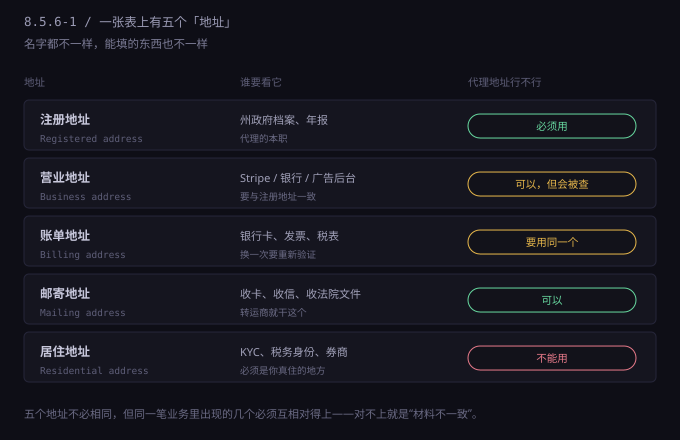
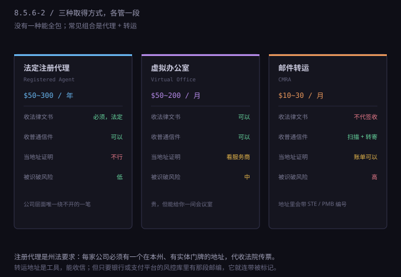
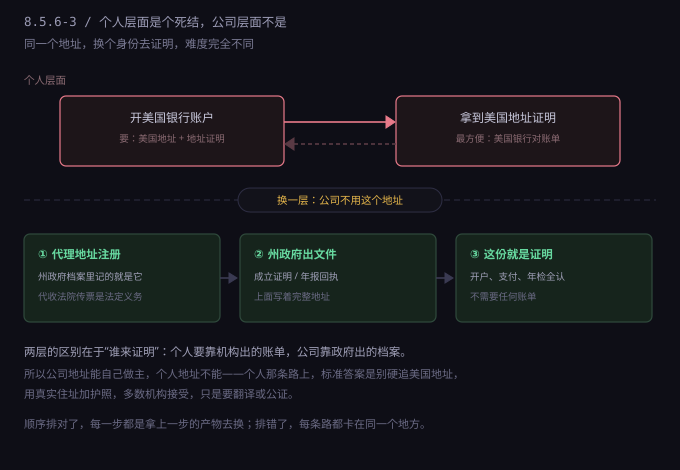

约 0.47 万字 · 3 张图 · 五个地址，三条路，一个死结
第一次填海外表单的人，最容易在这里懵：注册时让你填 address，开户时让你填 business address， 绑卡时让你填 billing address，报税时又冒出一个 mailing address。 四个词，四个框，看着都像同一个东西，实际不是。
先把它们分开。下面这五个，是你在整个流程里会遇到的全部地址类型：

| 地址 | 英文 | 出现在哪 | 能不能用服务商地址 |
|---|---|---|---|
| 注册地址 | Registered address | 州政府档案、年报、公司成立文件 | 必须用，这是法定要求 |
| 营业地址 | Business address | Stripe、银行、广告后台、发票 | 可以，但要经得起查 |
| 账单地址 | Billing address | 银行卡、税表、订阅扣款 | 最好和银行留的一致 |
| 邮寄地址 | Mailing address | 收卡、收信、收法院文件 | 可以，转运商就干这个 |
| 居住地址 | Residential address | KYC、税务身份、券商开户 | 不行，必须是真的 |
这五个不要求相同，但同一笔业务里同时出现的那几个必须互相对得上。 这是最容易忽略的一条，也是人工复核最爱抓的一条。
举个具体的错法：公司注册在特拉华，代理地址在 Wilmington；Stripe 填的是转运仓的地址，在俄勒冈； 银行填的是国内家里。三份材料三个州，系统不会立刻拒你，它会把你放进人工队列， 然后那个审核员要在九十秒里判断“这家公司到底在哪”。 他判断不出来，就按“材料不一致”处理。你说这是三个不同的地址类型，他说这是三个不同的地方。
正确的做法不是让五个地址变成同一个，而是让它们讲得通： 注册地址是代理的，因为州法要求本州实体地址，这条写在说明里； 营业地址是虚拟办公室，因为团队远程； 居住地址是真实的，因为那是人住的地方。 三个地址，三个理由，每一个都能一句话解释清楚——这就够了。
服务商提供的地址，按性质分只有三类。它们不是互相替代的关系，是各管一段：

下面三条逐条拆，还是老规矩：入口、成本、等多久、失败怎么办。
美国的公司法是州法。绝大多数州规定：在本州注册的公司，必须在本州有一个注册代理 （registered agent），作用只有一个——接收法律文书。
为什么要有这个东西？因为公司是虚拟的，法院要起诉一家公司，得有个地方把传票送到人手上。 如果公司没有实体地址，传票送不到，诉讼程序就没法启动。 所以州法把这个责任固定下来：你必须指定一个在本州有实体门牌、工作时间有人在的地址，替公司签收。
这就是为什么注册代理不是“可选项”，是“不买就注册不了”。你在州政府网站上填表的时候， 那一栏是必填的，填不上就进行不下去。
入口。两条路：一是用注册服务商的打包套餐（成立公司 + 首年代理 + 注册地址， 常见报价 $100~300）；二是单独买代理服务（$50~150/年）。 西北注册代理（Northwest）、Registered Agents Inc.、Harbor Compliance 这几家都是常见选择， 套餐里通常还带一个“首年免费”的营业地址。
成本。首年含在套餐里，第二年起 $50~150/年。 这是整套体系里最便宜、也最不能省的一笔。
等多久。当天生效。买完立刻能填表。
失败怎么办。基本不会失败，唯一要注意的是“代理辞职”—— 如果你不续费，代理会向州政府提交辞任通知，州政府会给公司一个宽限期（通常 30 天）要求你指定新的代理， 逾期公司状态会变成 “void” 或 “revoked”。这个状态会同步给所有查册的机构，包括银行和支付平台。
注册代理有一个副作用，必须提前知道：它的地址是共享的。 一家代理服务商可能替几万家公司代收文件，那个地址在州政府数据库里挂着几万个公司名。
这个特征对公是合法的，对风控是可疑的。Stripe 这类平台的风控库里，这类地址通常被标成 “mass registration address”（批量注册地址），不代表一定拒，但会提高人工审核的概率。 有些平台会直接要求你补充“实际经营地”的证明。
所以正确的用法是：注册地址用代理的，营业地址不要用同一个。 让这两个地址分开，本身就是“这家公司在正常经营”的一个信号。
虚拟办公室（virtual office）卖的不是办公室，是三个东西：一个真实门牌、一个有人签收的前台、一间按小时租的会议室。
入口。老牌的是 Regus（现在叫 IWG），全球几千个点，月付 $60~200，含信件代收和一定小时数的会议室。 面向小团队的有 Davinci Virtual、Opus Virtual Offices，$99/月起，含电话接听。 这类服务在纽约、旧金山、奥斯汀这些城市最密集。
成本。月付 $60~200，年付通常打折。比注册代理贵，比真租办公室便宜一个数量级。
等多久。当天到一周。需要签一份服务协议，有的要提供公司文件。
它适合干什么。当营业地址。因为它有真实门牌、有人在、能收快递、能开会。 银行或支付平台打电话核实的时候，前台会说“这家公司在我们这里”，这一句话比任何文件都管用。
它不适合干什么。当地址证明。多数虚拟办公室不给你出“居住证明”， 因为它们自己也清楚，那不是住人的地方。有些会出一份“地址确认函”， 但这份函的效力取决于收件方认不认——银行基本不认，因为它不是第三方机构出的。
失败怎么办。最常见的失败是“地址被平台拉黑”。 判断方法很简单：签之前先去 Google 地图看那个地址的街景。 如果是一栋写字楼，正常；如果是一间 UPS Store、一家便利店、一片住宅，那这个地址在风控库里的标签已经定了。
邮件转运（mail forwarding）是美国邮政体系里的一个正式品类，缩写 CMRA （Commercial Mail Receiving Agency，商业邮件代收机构）。它的本质是：你租一个信箱， 所有寄到这个地址的信，由这家机构代收，然后按你的要求扫描、合并、转寄。
入口。iPostal1、Anytime Mailbox、PostScan Mail，都是月付 $10 起的自助平台， 全球用户都能注册。选一个州、选一个地址、付月费，就有一个属于你的信箱号。
成本。月费 $10~30，看地址位置和扫描次数。转寄另算邮费。 一年一百多美元，是三种方式里最便宜的。
等多久。当天开通。但要真正能收信，还得过一道手续。
那道手续叫 USPS Form 1583。美国邮政规定，任何人使用 CMRA 收信， 必须提交这份表格，并附两份身份证明，其中一份要公证（notarized）。 线上平台一般提供远程公证，费用 $25 左右，流程是视频核验 + 电子签名。
这步不能跳。没交 1583 的信箱收不到任何信件，平台会把信退回。 有些人开了信箱发现“怎么一直没信”，原因就在这里。
为什么它最容易被认出来。因为美国邮政要求 CMRA 地址必须带一个可识别的编号，
格式是 STE 1234 或者 PMB 5678。这个编号不是普通办公室的门牌，
它在地址标准化数据库里有专门的标记。
除了编号，还有四个特征会被风控抓：
失败怎么办。如果银行或支付平台拒了转运地址，不要反复提交同一个地址—— 重复提交会被记成“试图规避”，比第一次被拒更麻烦。正确做法是换一类地址，或者换一家机构。
这里必须说清楚一件事：转运地址没有错，错的是拿它当“经营地”用。 它本来就是一个收信的地方，你用它收信、收卡、收纸质账单，完全正当。 但如果你在 Stripe 后台把营业地址填成一个信箱号，然后声称自己在那儿办公—— 那不是地址的问题，是陈述的问题。
地址证明（proof of address）是整套材料里最容易被低估的一份。 它的要求看起来很简单，实际上有三个硬条件，缺一个就废：
再加一条隐含的：必须是机构出具的。自己做的 PDF、自己写的确认函、手机截图，都不算。
| 认的 | 一般不认的 |
|---|---|
| 银行对账单（纸质或官方 PDF） | 任何截图，包括银行 App 的截图 |
| 水电燃气账单、宽带账单 | 手机话费账单（部分机构不认） |
| 政府信函：税单、社保信、车辆登记 | 快递单、网购订单 |
| 房屋租约（部分机构认，要整份） | 房东手写的居住证明 |
| 保险单（房屋、租客险） | 服务商出的“地址确认函” |
三个格式陷阱，每一个都足以让你白跑一趟：
日期。账单的“出账日”和“寄送日”不是一回事。有些电子账单 PDF 上只有账单周期， 没有出具日期，审核员找不到日期就按缺失处理。
姓名。护照上是 ZHANG SAN，账单上是 San Zhang，
在系统里这是两个字符串。多数机构能容忍顺序不同，但不能容忍拼写不同。
如果护照有中间名，账单上少一个字母都可能被退回。
地址缩写。美国邮政有一套标准缩写：Street 写成 ST，Avenue 写成 AVE， Suite 写成 STE，Apartment 写成 APT，North 写成 N。 同一份材料里一处写全称、一处写缩写，人工看没问题，机器比对会判定不一致。 提交前统一成缩写，是最省事的做法。
讲到这里，会碰到一个绕不过去的循环：想开美国银行账户，要美国地址和地址证明； 最容易拿到的美国地址证明，是美国的银行对账单。两边互为前提。

这个死结在个人层面是真的，没有巧妙解法。市面上所有“包开美国个人账户”的服务， 本质都是在替你做那件你不方便做的事，收费从几百到几千美元不等， 而账户开出来之后，能不能保住是另一回事。
公司层面就完全不一样。注册代理给你一个地址，州政府把那个地址写进公司档案， 然后给你一份文件——公司成立证明（Certificate of Formation / Articles of Organization）， 或者年报回执（Annual Report Filing Acknowledgment）。这份文件上有公司全称、有完整地址、有州政府的印章或备案号。
这份文件本身就是地址证明。它证明的不是“你住在这里”，是“这家公司登记在这个地址”。 对公业务要的正是后者。所以银行开户、Stripe 验证、年检、供应商审核，这份文件全都够用， 不需要任何账单。
还有一份同样好用的：EIN 确认信（CP575 或 147C）。上面有公司名和邮寄地址， 是国税局出的，公信力比任何商业文件都高。EIN 申请那一步（8.5.3 讲过，用 fax 提交）之后会寄到你的邮寄地址， 收到就扫描存档，之后每次要“证明公司在哪”，先拿这份。
所以顺序应该是这样：
为什么个人材料不推荐硬凑？因为个人的地址证明是“住”的证明， 它要求你人在那里。而公司地址是“登记”的证明，它只要求档案在那里。 这两件事的性质不同，能做的事也不同。搞混了，就会在个人这条路上耗掉几个月。
把上面的东西拼起来，实际可用的配置只有三种，按预算排：
| 配置 | 组成 | 年成本 | 适合 |
|---|---|---|---|
| A 最小 | 注册代理 + 邮件转运 | $100~250 | 只注册公司、只收款，不做需要核实的业务 |
| B 标准 | A + 虚拟办公室（当营业地址） | $800~2,000 | 要开银行、要接平台审核、要能接到核实电话 |
| C 实体 | B + 真实工位租约（coworking 月租） | $3,000 起 | 要做本地生意、要签合同、要实地考察 |
A 能跑通 80% 的事，卡在需要“打电话核实”的那 20%。 B 是多数人的终点，因为它把“有人接电话”这一条补上了。 C 只有真在美国做事才需要，纯粹做线上生意的话，多花的钱换不来对应的东西。
定好配置之后，最后一步是一致性检查。这件事必须在提交任何一份材料之前做完， 因为改一次地址，往往要触发一整轮重新验证。
下面这六处，把地址抄成完全相同的字符串——包括缩写、大小写、标点：
第六处很多人忽略，但它是审核员最常用的交叉验证点：他去你的网站看，页脚写的地址和后台填的不一样， 这就是一个免费的破绽。
还有一个小细节：邮编加四（ZIP+4）。有些地址查询工具会给出 19801-1234 这种格式，
有些只给 19801。两种都对，但同一套材料里只能用一种。
用五位的那种，兼容性最好。
STE / PMB），加上连锁店面、集中邮编、零售街景，是风控最先抓的一类。